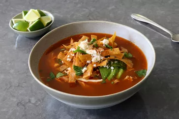

Home Page
Chicken Tortilla

Description
My chicken tortilla soup is not a fast recipe, but it is one of the greatest chicken soup experiences known to man. The smoky, spicy, slowly simmered tomato chicken broth is made from scratch, and the soup is topped with all your favorite garnishes: toasted tortilla strips, sour cream, avocado, cilantro, lime, and crumbled Mexican cheese.
Ingredients
- 1 (4 1/2 pound) whole chicken
- 3 white onions, halved, divided
- 1 bunch cilantro, rinsed well
- 2 bay leaves
- 1/2 teaspoon whole black peppercorns
Steps
- Combine chicken, 1 onion, stems from the cilantro bunch, bay leaves, oregano, peppercorns, dried chili pods, and 3 quarts of water in a large soup pot set over medium-high heat. Bring to simmer, lower heat to medium-low, and simmer for 1 hour.
- Meanwhile, make the tortilla strips: Preheat the oven to 350 degrees F (180 degrees C). Line a baking sheet with a silicone mat or parchment paper.
- Cut tortillas in half, and then cut crosswise into 1/4-inch strips. Transfer tortilla strips to the prepared baking sheet and drizzle with oil. Add salt and toss well to coat, then spread strips out as evenly as possible.
- Bake in the preheated oven until golden brown and crispy, tossing once or twice during the cooking time, about 30 minutes. Set aside.
- Carefully remove chicken to a bowl. Reduce heat on broth to low.